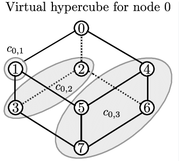
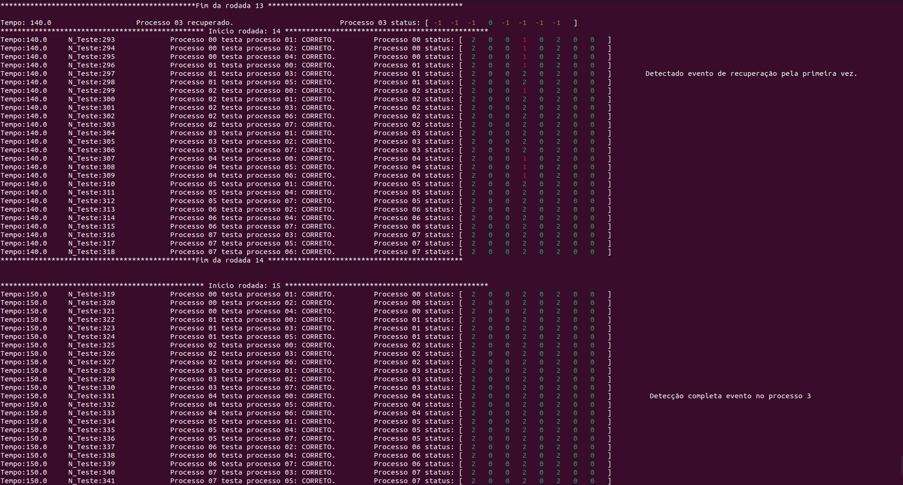
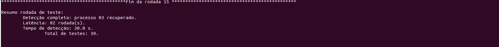

Fluxo Programa método:
-
getTestingList: Responsável por preencher a lista de processos que o processo vai testar, tal que a cada intervalo de testes os logN clusters são testados.
Realiza lista de processos a serem testados, tal como modelo de Clusters do VCube abaixo:

-
executeTest: Responsável por executar teste em um processo, ao executar o teste, percorre o vetor stateVec do processo testado para verificar se existe novidade (vl_evento_proc_testador > vl_evento_proc_testado ), caso exista, então copia para a posição do estado devido no processo testador.
Utiliza atributo do TipoEstado para verificar se é o primeiro a detectar (notFirstDetection), caso seja, printa que o estado foi detectado pela primeira vez, para melhor controle de detecção de estados.
Printa cada teste executado pelo processo no padrão: Tempo + Número do Teste + Processo Testador teste Processo Testado + stateVec processo Testador.
Como na evidência:

E o resumo da rodada em que houve a detecção completa tal como:

-
printStatusVec: Método auxiliar para efetuar print do vetor de estados do processo.
-
printLogHeader: Printa informações iniciais do log.
-
checkProcessStartDetection: Para verificação de inicialização do sistema.
-
checkEventFullDetection: Utilizado para detectar que todos os processos detectaram um evento, ao verificar isso, printa Resumo da rodada com informações de qual o evento + Latência (Utilizado n_rodada_evento - n_rodada_detecção_completa ) + Tempo (tempo_atual - tempo_evento )
-
resetEvent: Método auxiliar para, ao todos detectarem um evento efetua o reset para utilizar a variável.